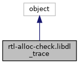
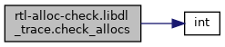
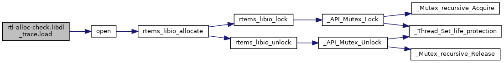

|
RTEMS
5.0.0
|
|
RTEMS
5.0.0
|


Public Member Functions | |
| def | __init__ (self, name) |
| def | load (self) |
| def | check_allocs (self) |
Data Fields | |
| name | |
| trace | |
Definition at line 23 of file rtl-alloc-check.py.
| def rtl-alloc-check.libdl_trace.__init__ | ( | self, | |
| name | |||
| ) |
Definition at line 24 of file rtl-alloc-check.py.
| def rtl-alloc-check.libdl_trace.check_allocs | ( | self | ) |
Definition at line 38 of file rtl-alloc-check.py.
References int(), len, rtl-alloc-check.libdl_trace.trace, and ramdisk.trace.

| def rtl-alloc-check.libdl_trace.load | ( | self | ) |
Definition at line 28 of file rtl-alloc-check.py.
References ParmRec_.name, if_config.name, rtems_bsdnet_early_link_check_ops.name, BSP_NetIFDescRec.name, bfin_uart_channel_t.name, rtl-alloc-check.libdl_trace.name, ambapp_device_name.name, milkymist_gpio.name, ambapp_vendor_devnames.name, regdef.name, section_detail.name, rtems_rtl_obj_sym.name, rtems_assoc_t.name, rtems_pty_context.name, rtems_gdb_stub_thread_info.name, fdt_node_header.name, ofw_tree_property_t.name, link_map.name, scidev_t.name, Objects_Control.name, rtems_debugger_remote.name, _DisplayModeRec.name, __rtems_irq_connect_data__.name, mg_request_info::mg_header.name, task_t.name, monCommand.name, rtems_rap_app.name, leon2_core.name, utask_t.name, Semaphore_MP_Packet.name, uart_channel_config.name, Partition_MP_Packet.name, tfdinfo.name, TtySTblRec_.name, Message_queue_MP_Packet.name, rtems_monitor_symbol_t.name, rtems_shell_cmd_tt.name, rtems_monitor_generic_t.name, rtems_debugger_thread.name, wd_softc.name, t_yamon_env_var.name, rtems_rtl_archive.name, ide_controller_bsp_table_s.name, T_case_context.name, rtems_capture_from.name, rtems_shell_alias_t.name, rtems_monitor_task_t.name, rtems_rtl_unresolv_symbol.name, rtems_capture_control.name, rtems_rtl_unresolv_reloc.name, rtems_monitor_init_task_t.name, gz_header_s.name, rtems_initialization_tasks_table.name, rtems_rtl_obj_sect.name, rtems_monitor_queue_t.name, rtems_rtl_unresolv_rec.name, rtems_monitor_sema_t.name, tfshdr.name, _rtems_rfs_inode.name, rtems_monitor_extension_t.name, rtems_assoc_32_pair.name, Thread_Configuration.name, ep_softc.name, devdesc.name, rtems_disk_device.name, rtems_monitor_region_t.name, vendesc.name, rtems_capture_task_record.name, rtems_monitor_part_t.name, rtems_monitor_driver_t.name, rtems_profiling_smp_lock.name, drvmgr_map_entry.name, IMFS_jnode_tt.name, drvmgr_dev.name, rtems_interrupt_server_config.name, rtems_shell_filesystems_tt.name, IMFS_sym_link_t.name, _Scheduler_Control.name, mot_info_t.name, drvmgr_drv.name, _debug_regs_pair.name, Thread_queue_Queue.name, T_config.name, T_measure_runtime_request.name, open(), rtl-alloc-check.libdl_trace.trace, and ramdisk.trace.

| rtl-alloc-check.libdl_trace.name |
Definition at line 25 of file rtl-alloc-check.py.
Referenced by rtl-alloc-check.libdl_trace.load().
| rtl-alloc-check.libdl_trace.trace |
Definition at line 26 of file rtl-alloc-check.py.
Referenced by rtl-alloc-check.libdl_trace.check_allocs(), and rtl-alloc-check.libdl_trace.load().
 1.8.17
1.8.17